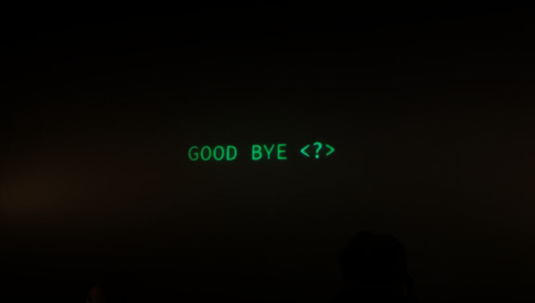
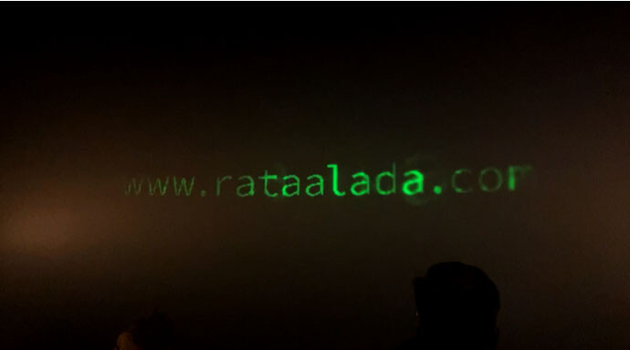
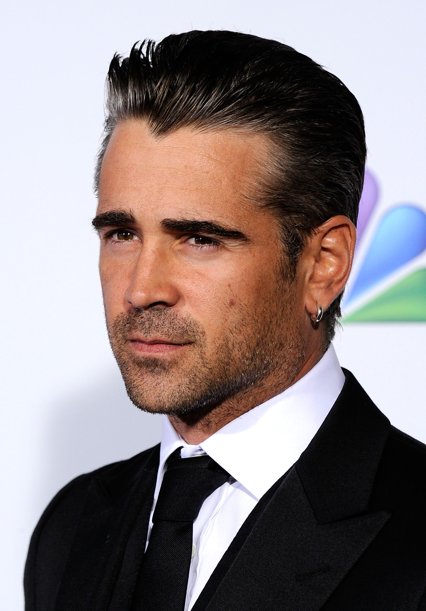
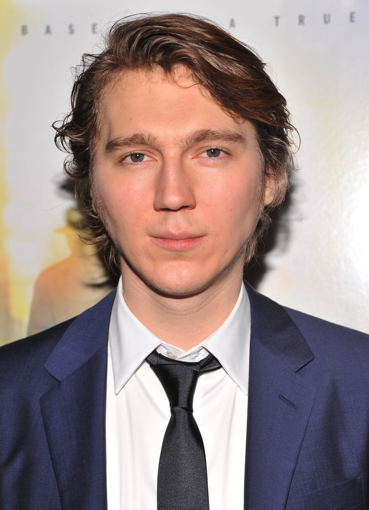
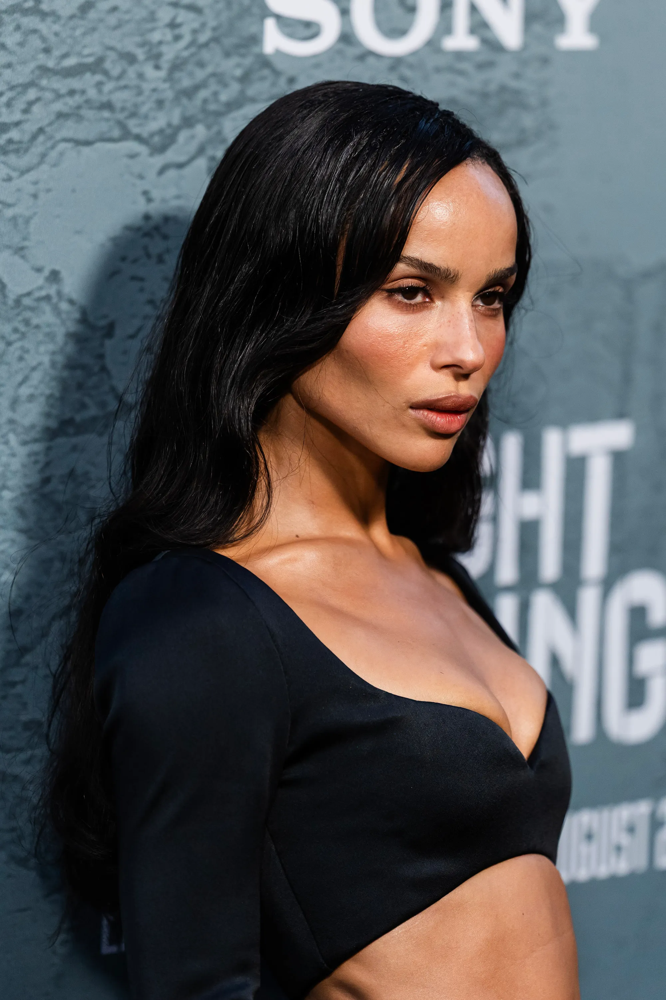

The Batman:
'The Batman', la nueva película de Matt Reeves ofrece una versión nueva y más oscura del icónico superhéroe de DC en la que Robert Pattinson hace de un aún joven Bruce Wayne que ayuda a Jim Gordon (Jeffrey Wright) a resolver una serie de asesinatos en Ciudad Gótica a través de muchos acertijos para resolver el plan de Enigma, pero ¿Tiene escena post créditos la película?
Una escena post-créditos relativa:
La respuesta es que no hay una escena propiamente dicha después de los créditos, pero sí hay algo, un easter egg. Si tienes curiosidad, querrás quedarte hasta el final. A diferencia de Marvel, que casi siempre tiene al menos una escena durante o después de los créditos de sus películas.
Aquí el clip adicional al final está lejos de lo que normalmente esperaríamos.No es una escena rodada que presenta personajes en pantalla.
SPOILERS DE LA ESCENA POST-CRÉDITOS DE THE BATMAN
En primer lugar aparece solamente una línea de conversación que dice:GOOD BYE, como si fuera una conversación de chat con Enigma.

Si prestamos atención a la pantalla hay un pequeño flash que nos deja ver una imagen casi subliminal que nos muestra una web.

Un juego con recompensa:
Lo divertido es que si vamos a la web www.rataalada.comnos encontramos con el chat que propone varios acertijos.
La web tiene varios acertijos que nos pregunta un misterioso personaje que se supone que es el villano de la película.

Tabla del reparto de los personajes:
| Los Cuatro Fantásticos: | ||
| Personaje: | Actor/Actriz: | Imagen: |
|---|---|---|
| Bruce Wayne / Batman | Robert Pattinson |  |
| Jim Gordon | Jeffrey Wright |  |
| Enigma | Paul Dano |  |
| Catwoman | Zöe Kravitz |  |